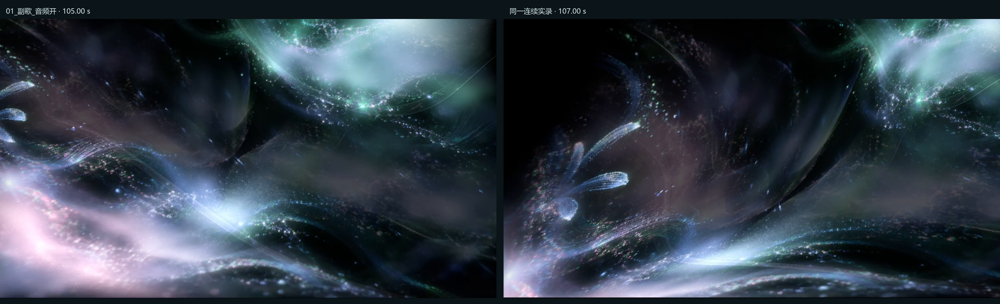
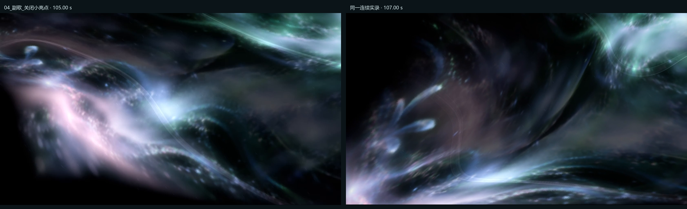
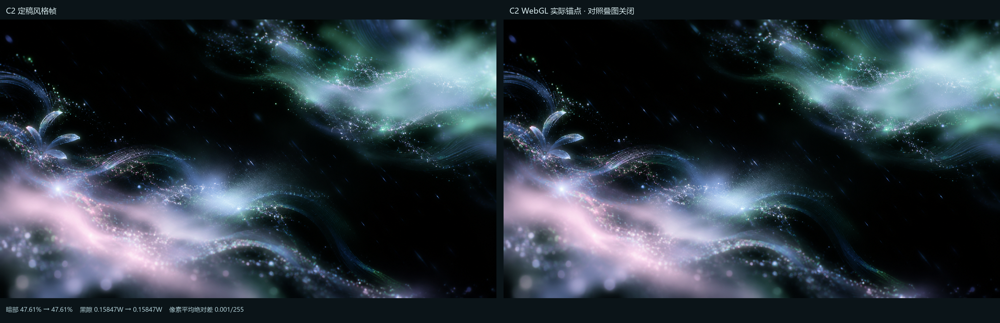
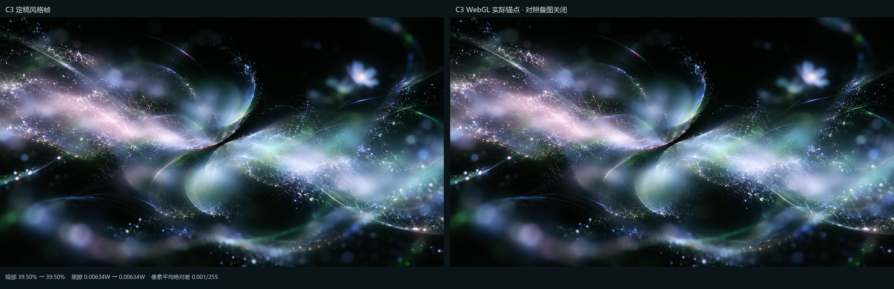
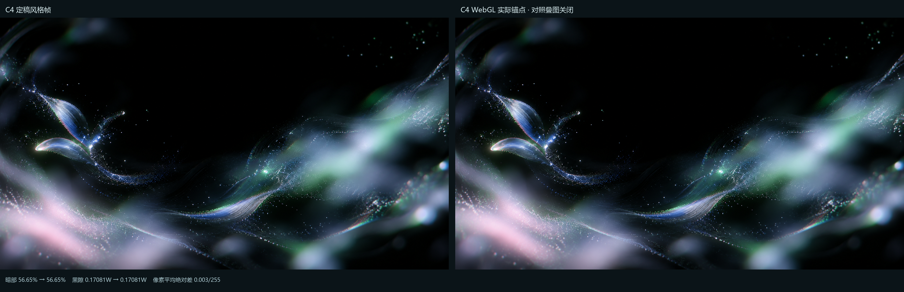

← 返回实时演出先看整体，再看细节。
以下均为这台电脑实际运行网页录制的原曲片段。每段 10 秒；开关对比保留相同音乐。为避免两路音频叠加，比较播放时只让左侧发声。视频只保存在本地忽略目录。
01 / 同一段副歌，音频驱动开与关
105–115 s · 音频驱动开相同段落 · 音频驱动关
02 / 相隔两秒，大形体的位置与形状

03 / 主歌与副歌
40–50 s · 主歌105–115 s · 副歌
这里使用仓库原有曲式工作标签，标签仍保留“待人耳确认”的来源状态。
04 / 关闭小亮点，仍由形体推动画面
额外的 12,000 个小亮点槽不提交绘制；结构色彩先作低通以抑制原图里的细小亮点。雾体仍由密集微粒构成，光带和雨保留。

05 / 四个锚点重新对照
每张左侧是原图，右侧是参考叠图关闭时的实际 WebGL 输出。相似度来自参考图提供粒子位置与颜色，不代表无参考生成。



